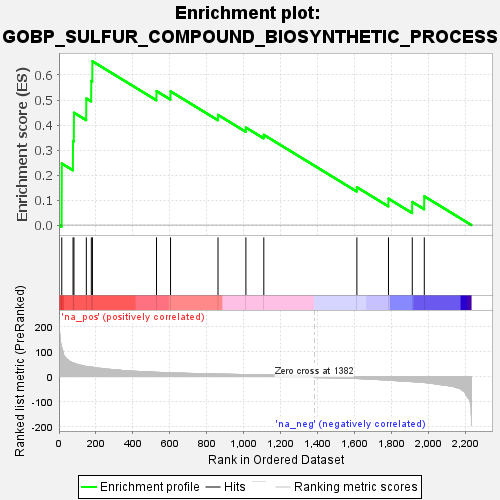
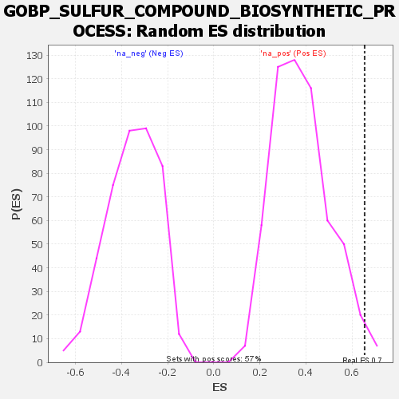

| Dataset | rank |
| Phenotype | NoPhenotypeAvailable |
| Upregulated in class | na_pos |
| GeneSet | GOBP_SULFUR_COMPOUND_BIOSYNTHETIC_PROCESS |
| Enrichment Score (ES) | 0.6548821 |
| Normalized Enrichment Score (NES) | 1.7236183 |
| Nominal p-value | 0.01576182 |
| FDR q-value | 0.6276288 |
| FWER p-Value | 0.99 |

| SYMBOL | RANK IN GENE LIST | RANK METRIC SCORE | RUNNING ES | CORE ENRICHMENT | |
|---|---|---|---|---|---|
| 1 | PANK3 | 15 | 116.890 | 0.2460 | Yes |
| 2 | ELOVL7 | 76 | 54.010 | 0.3358 | Yes |
| 3 | METTL16 | 81 | 53.248 | 0.4492 | Yes |
| 4 | FASN | 148 | 40.130 | 0.5062 | Yes |
| 5 | PDPR | 175 | 37.836 | 0.5763 | Yes |
| 6 | MTHFR | 181 | 37.360 | 0.6549 | Yes |
| 7 | GGT1 | 528 | 17.012 | 0.5357 | No |
| 8 | ACSS2 | 604 | 15.063 | 0.5345 | No |
| 9 | ACSL1 | 861 | 9.850 | 0.4405 | No |
| 10 | CBS | 1012 | 7.881 | 0.3899 | No |
| 11 | SIRT4 | 1109 | 6.530 | 0.3608 | No |
| 12 | SLC25A19 | 1613 | -7.979 | 0.1513 | No |
| 13 | GCLM | 1784 | -14.262 | 0.1056 | No |
| 14 | SLC7A11 | 1913 | -20.443 | 0.0921 | No |
| 15 | AKR1A1 | 1978 | -23.879 | 0.1149 | No |
